DYNASTY / ACCESSORY REFINEMENT 03 / 2026-09-24百炼佩章
本轮 8 件新品 · 8 条三阶路线 · 24 件可淬炼饰品 · 新增 28 个流派任务
锻造台进化：兵器图纸 + 上一阶饰品 + 对应材料。保留强化、附魔和名称。铁砧淬炼：饰品 + 指定材料，取出才消耗材料与经验。佩戴后增伤，同名饰品只取最高淬炼；不需要主动按键。
同一件，也能持续变强
淬炼额外伤害 = 4% × √等级。+1 为 4%，+25 为 20%，+100 为 40%。单级收益递减，没有固定毕业等级。材料数量与经验成本增长后分别封顶 64 份、39 级，避免铁砧“过于昂贵”阻断后期成长。
| 当前淬炼等级 | 下一次材料 |
|---|
| 0–9 | 玉 |
| 10–24 | 龙晶 |
| 25–49 | 玄天玉 |
| 50+ | 天将令 |
每个流派有两条饰品进化连线，以及独立的「铁砧 → +1 → +5 → +15 → +30」淬炼任务线。任务检测真实等级；+30 是里程碑，不是上限。流派章节各 35 个节点，整本 35 章 / 664 节点，主线仍为 69 节点。
游龙剑舞
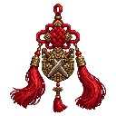
武曲剑结
近战伤害 +20%
→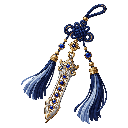
七星剑结
近战伤害 +36%
→天衡剑结
近战伤害 +52%
破军戒
近战伤害 +12%
→百战戒
近战伤害 +28%
→万钧戒
近战伤害 +44%
玄武守御
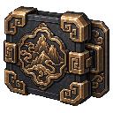
玄甲扣
近战伤害 +10%
→北辰护心镜
近战伤害 +24%
→镇海护心镜
近战伤害 +38%
山岳镯
→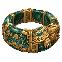
玄岳臂环
每点护甲韧性转为 +0.6% 近战伤害（最多 +60%）
→不周臂环
近战伤害 +76%
逐星射艺
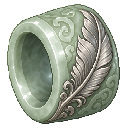
雁翎扳指
箭矢伤害 +12%
→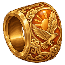
贯日扳指
箭矢伤害 +28%
→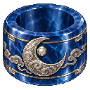
射月扳指
箭矢伤害 +44%
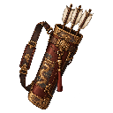
神机箭囊
箭矢伤害 +18%
→逐日箭囊
箭矢伤害 +36%
→
金乌箭囊
箭矢伤害 +52%
道门律令
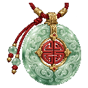
灵纹佩
律令兵器伤害 +15%
→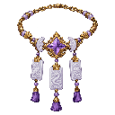
紫微符链
律令兵器伤害 +32%
→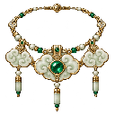
三清符链
律令兵器伤害 +48%
雷部印
律令兵器伤害 +22%
→太清符匣
律令兵器伤害 +40%
→玉虚符匣
律令兵器伤害 +56%
书中可直接查配方
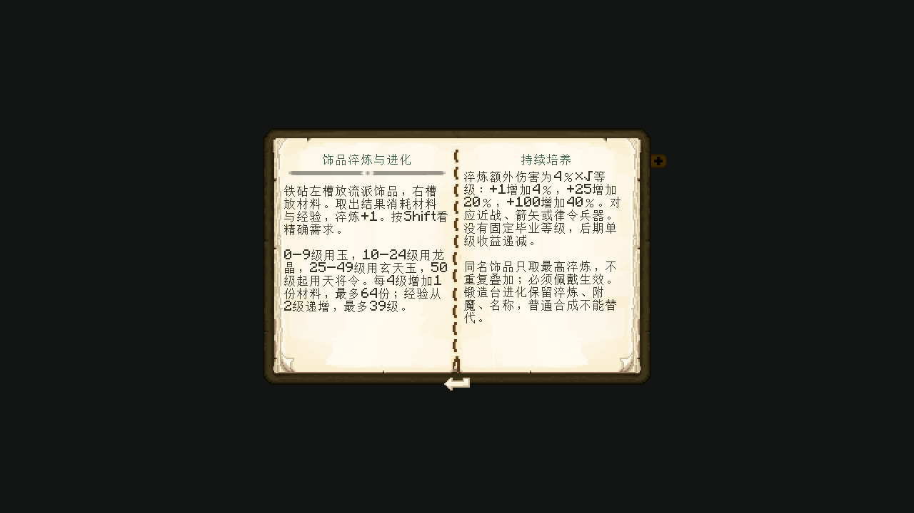
独立 Minecraft + Patchouli 客户端实际截图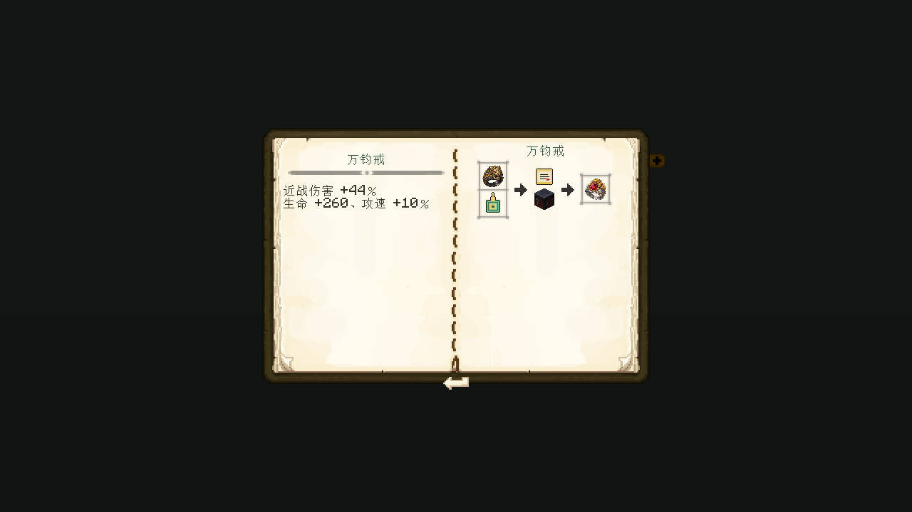
独立 Minecraft + Patchouli 客户端实际截图上方饰品是实际资源贴图；每件独立生成后机械裁切、缩放。不是概念图。原图与完整提示词 · 验证与交付说明 · 完整任务配置预览